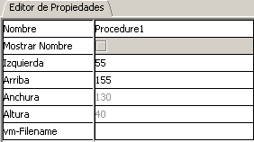

Elemento "Procedimiento/Función"
Con este Elemento se empieza un Procedimiento o Función.
Este elemento siompre llevará delante una función "Start"
con su nombre y sus parámetros colocados entre paréntesis.
Ejemplo: resultado=Test(a,b,c)
El Procedimiento/Funcioópn pude inicarse en el propio diagrama
de flujo o recogerse de otro VM
Para empezar en el propi diagrama de flujo la propiedad "vm-Filename"
estará vacía.
Para empezar en otro diagrama de flujo residente en otro ficchero
la propiedad "vm-Filename" debera contener el npmbre
del fichero VM (sin la extensión "vlogic" ))
Ejemplo: sub-vm = subvm.vlogic -> el subvm
